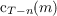
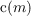
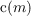

25Throughout the remaining analysis I make a final assumption that is not strictly justified by the
foregoing. We have seen that the finite-horizon consumption functions  are twice continuously
differentiable and strictly concave, and that they converge to a continuous function  . It does not strictly
follow that the limiting function  is twice continuously differentiable, but I will assume that it
is.
. It does not strictly
follow that the limiting function  is twice continuously differentiable, but I will assume that it
is.